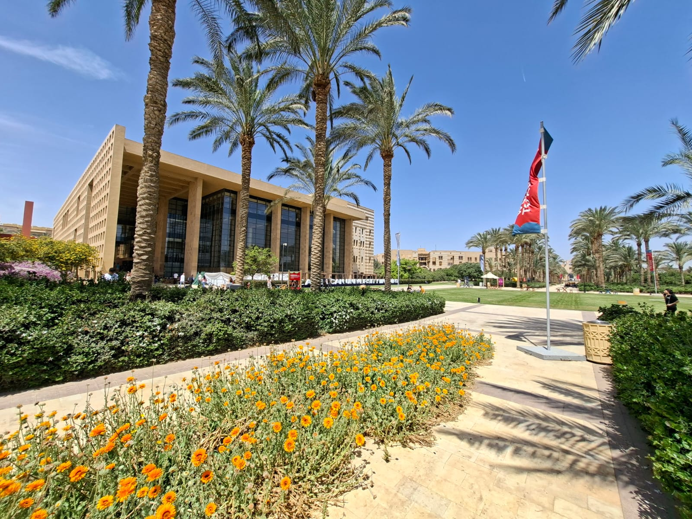

Day 1
Sunday24 May
- Introduction to Model Theory
- Fraïssé Theory
Summer School · 24–26 May 2026
A three-day school on model theory, Fraïssé theory, ω-categorical groups, and structural Ramsey theory.
The Cairo Logic Summer School 2026 brings together students and researchers in mathematical logic for three days of lectures and discussions at the American University in Cairo, from 24 to 26 May 2026.
The school is open to advanced undergraduates, graduate students, and early-career researchers. It begins with introductory mini-courses on model theory and Fraïssé theory, then moves on to current research themes: ω-categorical groups and structural Ramsey theory. No prior background in model theory is assumed — a basic familiarity with first-order logic and abstract algebra is sufficient.

Beyond pure logic, the themes of the school have surprisingly deep ties to theoretical computer science and data science. The central insight of Ramsey theory — that sufficiently large systems must contain ordered substructure — underpins classical lower bounds in communication complexity, the construction of pseudorandom objects, and tools from extremal combinatorics used in coding theory and cryptography. Closely related regularity phenomena drive algorithms for network analysis, clustering, and community detection on large graphs. Model-theoretic notions of stability and dimension, in turn, connect directly to statistical learning theory, most famously through the equivalence of NIP and finite VC dimension.
The school runs from Sunday through Tuesday. Each day features two lecture series. A detailed timetable will be posted closer to the date.
Registration is free. To apply, please complete the registration form→ by Wednesday, 13 May 2026. Due to space constraints we are unable to accommodate every applicant; selected participants will be notified shortly after the deadline.
Students from universities across Egypt and the wider region are warmly encouraged to apply.
The Cairo Logic Summer School is supported by the U.S. National Science Foundation under Nicholas Ramsey's CAREER Award DMS-2442011, and by the American University in Cairo through Afretec, the African Engineering and Technology Network.